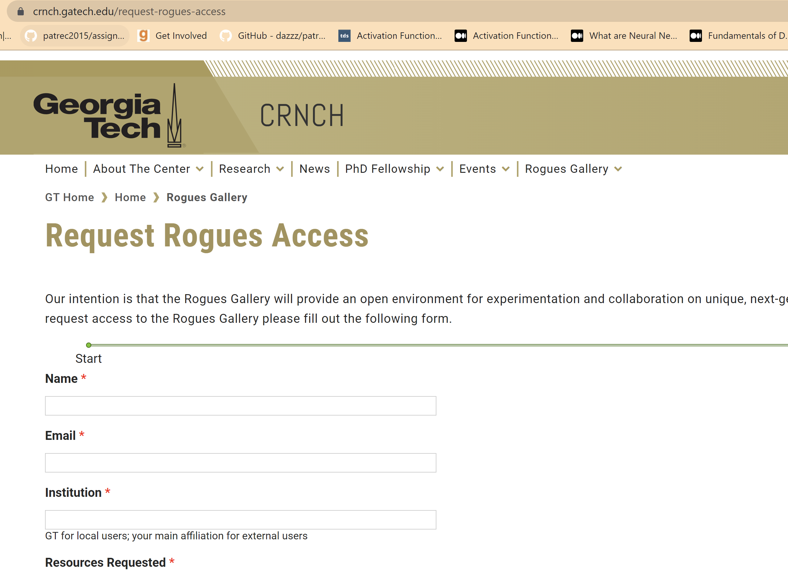
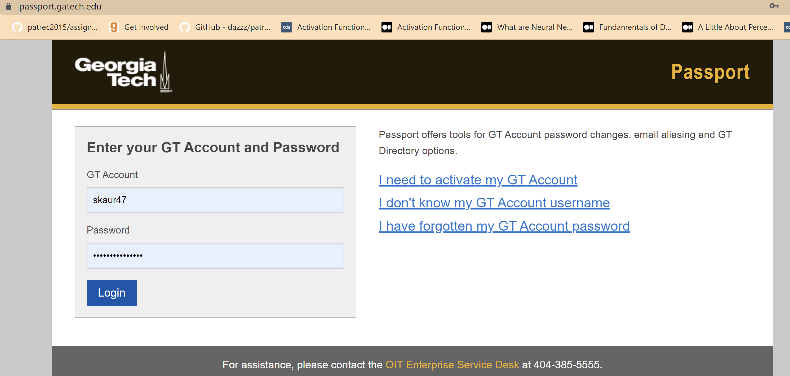
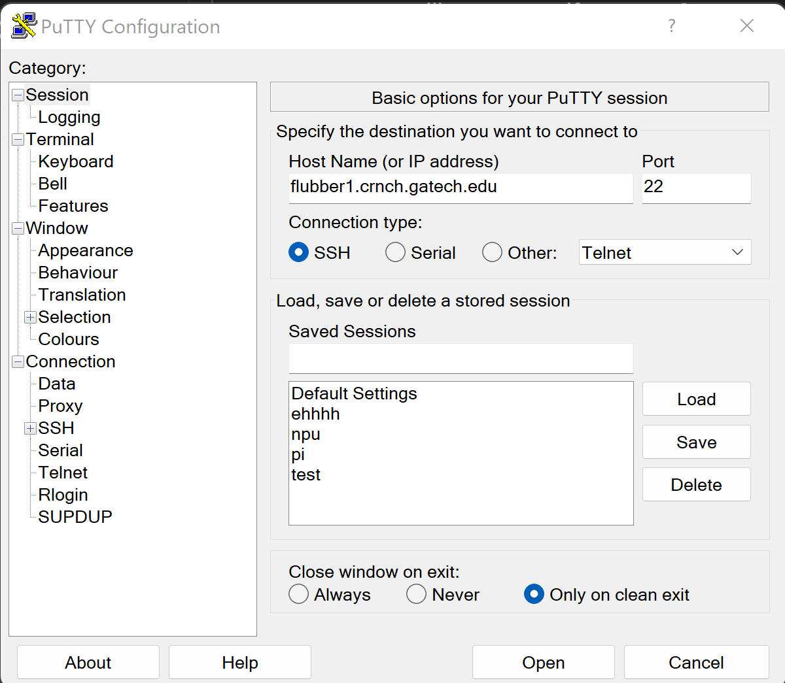
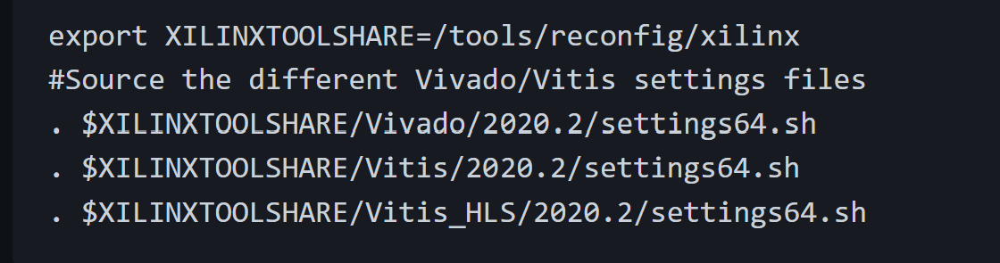
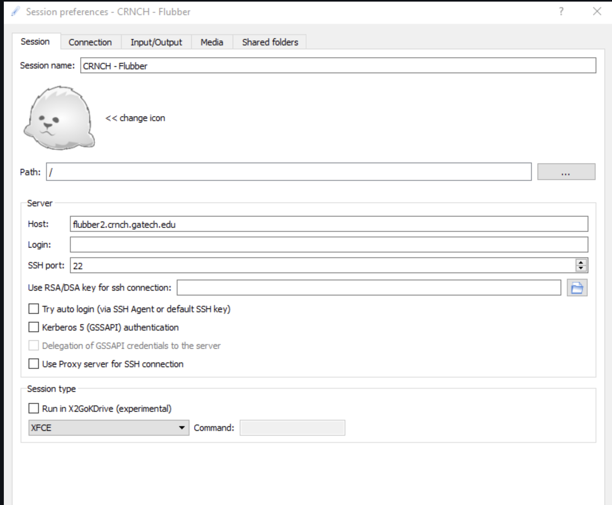
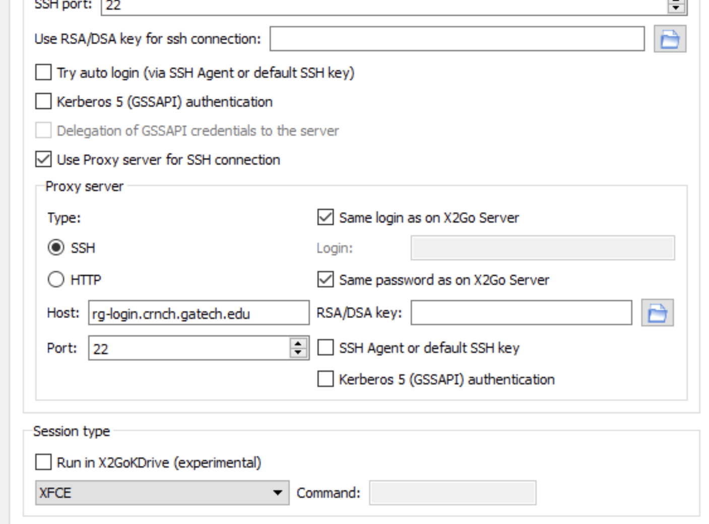
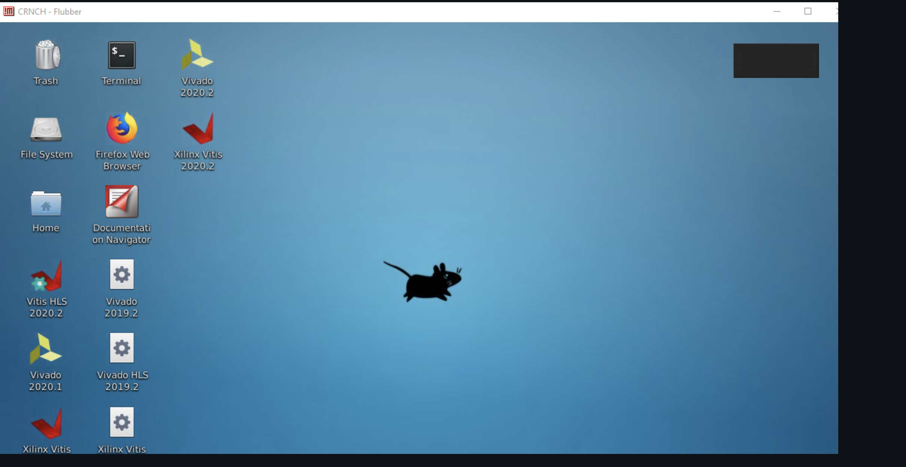

You will receive an email for your GA Guest account created and it will contain links and username and password access to the GA Tech 'passport' login.

Once you login to the GA tech passport account, you can access their testbed documentation on Github at https://github.gatech.edu/crnch-rg
Look for '[Reconfig] Xilinx FPGAs Getting Started' and follow the steps mentioned to log in to your VM.
You don't need to create extensive custom instantiations as for OCT. There are 3 different nodes for FPGAs depending upon your hardware usage. You have Pynq Z2 FPGAs, Ultrascale SoCs, and 3 Alveo 280 Datacenter cards.
rg-fpga-cubed.crnch.gatech.edu - The Pico Computing SC6 system contains HMC memory and Xilinx Ultrascale chips.
You can use these directly into your PuTTY terminal of your local system to access the board you require.


To access the GUI on CRNCH Rogues, you can use X2Go. check out their installation guide here: https://wiki.x2go.org/doku.php/doc:installation:start
For Ubuntu : sudo apt-get install x2goserver x2goserver-xsession
Use your ssh host and GA Tech username and password to log in. 
Unless you are a GA Tech student/staff/faculty, you will have a guest account, and for that your need to add proxy settings.
'If you are not on campus VPN, you need to add the "proxy setting" for the X2go client to use rg-login.crnch.gatech.edu as your login or jump host proxy. Set the proxy to use the same login and password as the x2go server.'

Once you are done, you can see the GUI access like this:

References:
Your main point of contact for CRNCH goes through GA Tech support portal or helpdesk@cc.gatech.edu or you can contact Dr. Jeffery Young at jyoung9@gatech.edu
Once you get access, you can use the documentation at Github linked above; like mentioned above, CRNCH is less supported and at times, unreliable.